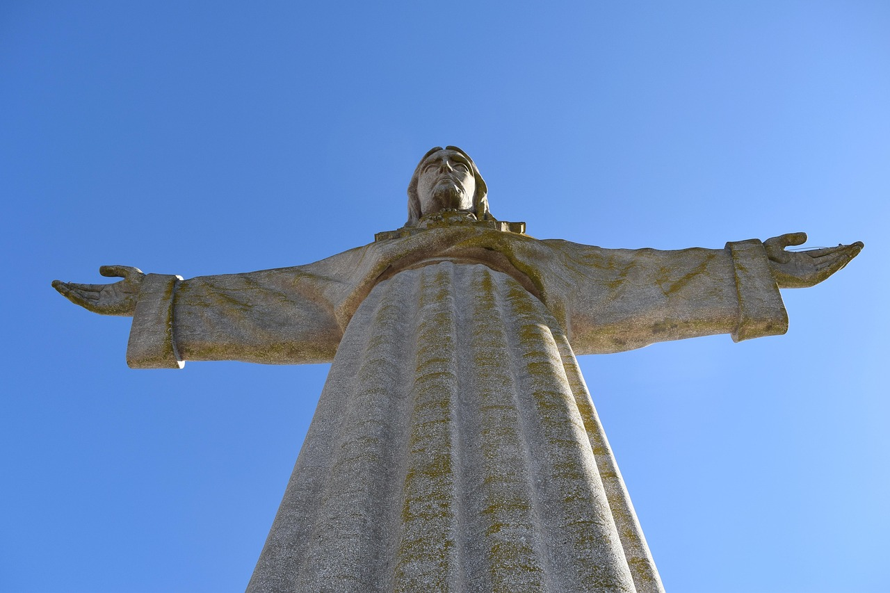
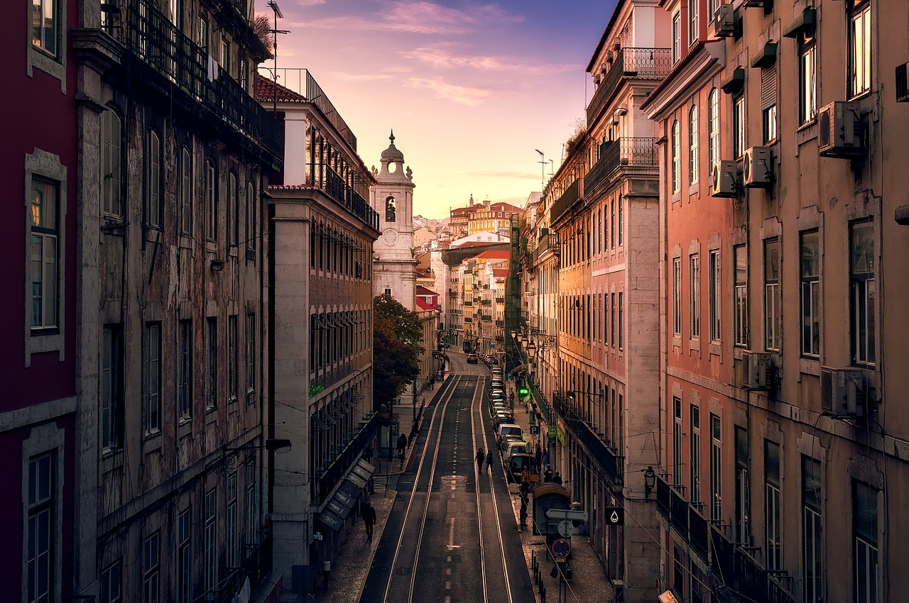
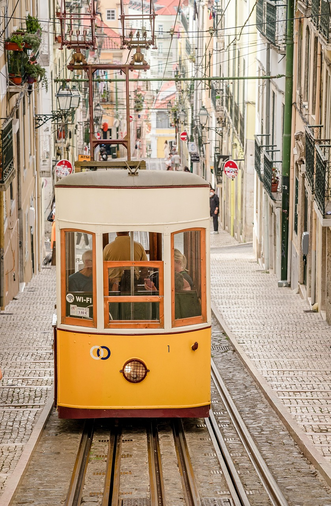
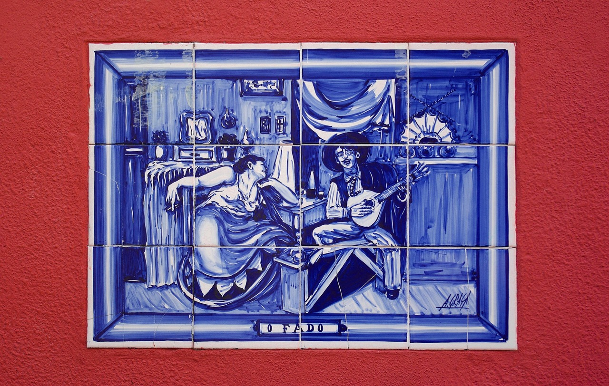

Informações sobre Lisboa
Lisboa é a capital e maior cidade de Portugal, conhecida pela sua luz única, colinas pitorescas, bairros históricos e proximidade ao rio Tejo. É um centro cultural vibrante, com uma mistura de tradição e modernidade, gastronomia rica e uma vida urbana animada.


Destaque: Lisboa é famosa pelos seus elétricos amarelos, miradouros com vistas deslumbrantes, e monumentos como a Torre de Belém e o Mosteiro dos Jerónimos. A cidade é também reconhecida pela hospitalidade dos seus habitantes e pelo clima ameno durante todo o ano.


A cidade oferece uma grande variedade de museus, jardins e espaços culturais, como o MAAT, o Oceanário e o Parque das Nações. Lisboa é também palco de eventos internacionais, festivais de música e arte, e tem uma vida noturna muito ativa.